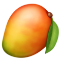
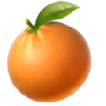

Mango |
Mango is known as the king of fruits. This pulpy fruit grows during the summer season. The cultivation of mango started around 6000 years ago. They come in both flavours of sweet and sour. Moreover, they are also very rich in minerals and nutrients.Mangoes have unique nutritional and medicinal qualities which makes it very beneficial. It is a rich source of vitamins A and C. In addition to having a beautiful shape and appearance, the taste of mango is very delicious. |

Orange |
The orange, one of the oldest cultivated fruits known to man, have been grown for more than 4,000 years. They probably originated in the part of Asia that contains India and China. Oranges are known for their delicious juice and vitamin C content. They also contain a source of potassium and folic acid.Not all oranges are orange. They range from pink, orange, dark red, orange to yellow in color. There are many different varieties of oranges. |